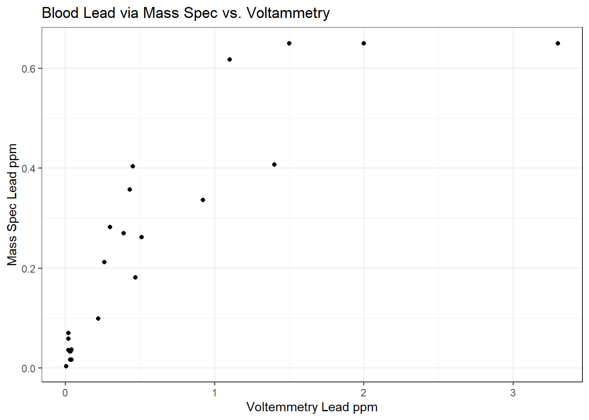
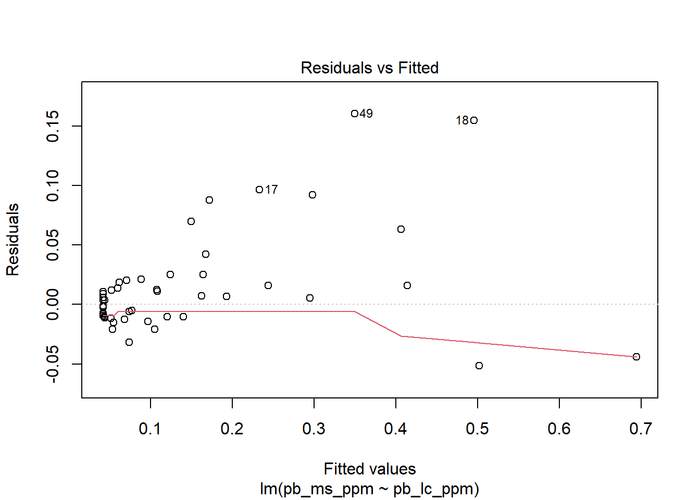
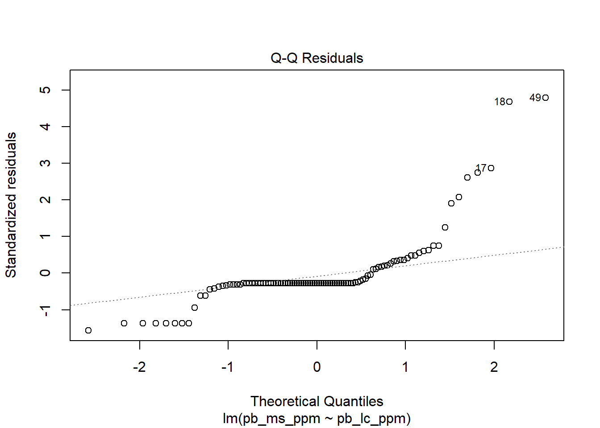
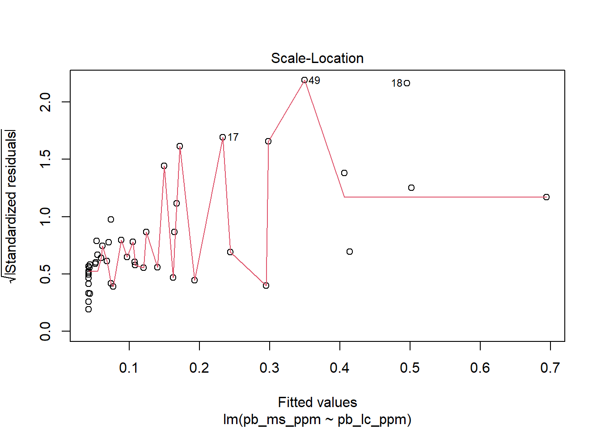
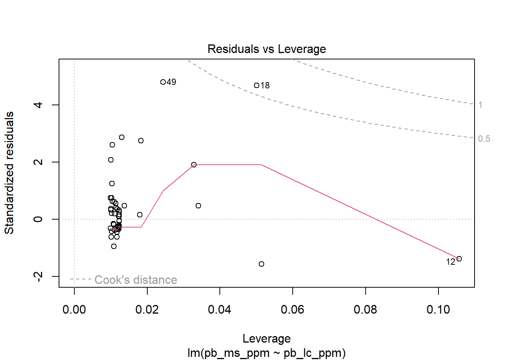
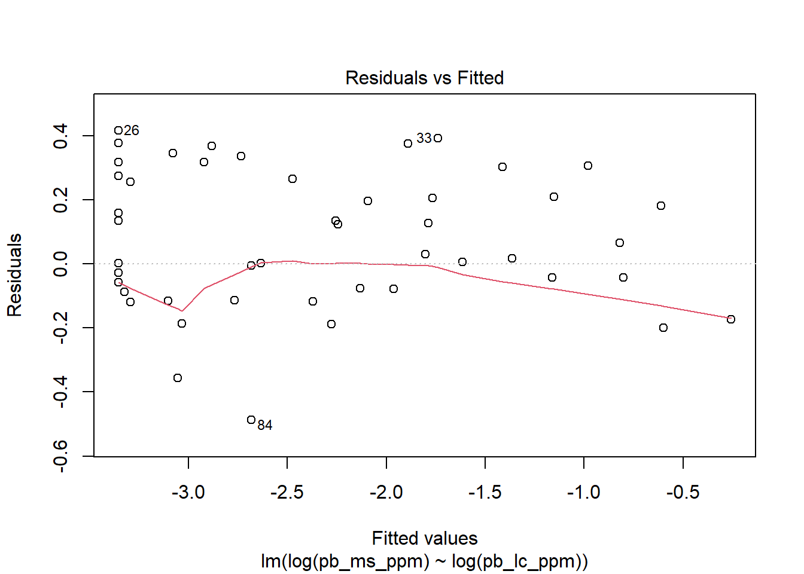
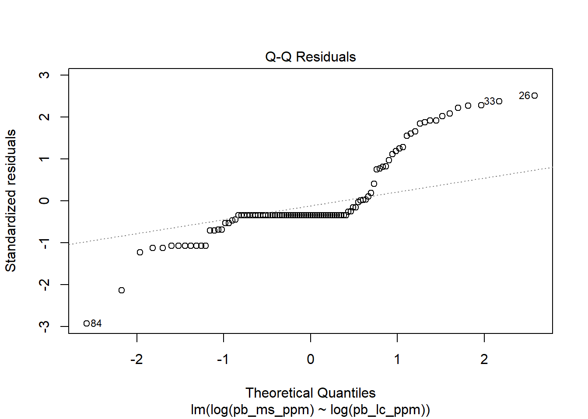
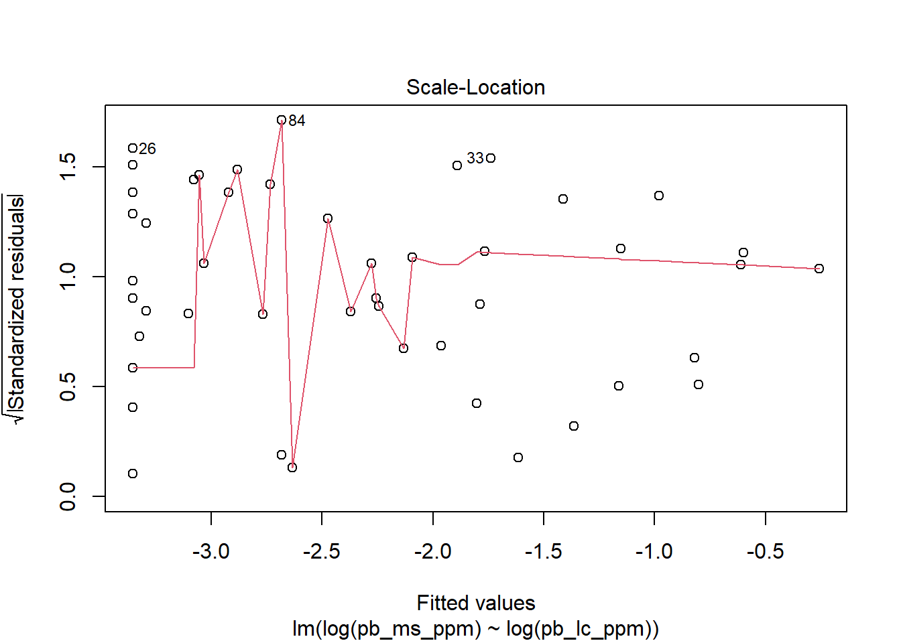
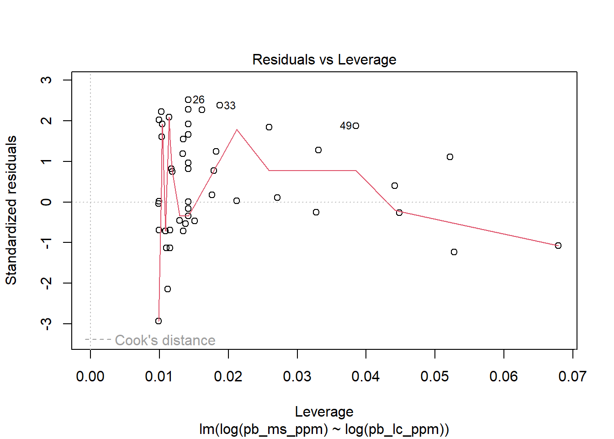

Blood lead values: LeadCare II measurements compared to mass spec measurements
2025-12-02
Last updated: 2025-12-02
Checks: 6 1
Knit directory: spei_lead/
This reproducible R Markdown analysis was created with workflowr (version 1.7.1). The Checks tab describes the reproducibility checks that were applied when the results were created. The Past versions tab lists the development history.
The R Markdown file has unstaged changes. To know which version of
the R Markdown file created these results, you’ll want to first commit
it to the Git repo. If you’re still working on the analysis, you can
ignore this warning. When you’re finished, you can run
wflow_publish to commit the R Markdown file and build the
HTML.
Great job! The global environment was empty. Objects defined in the global environment can affect the analysis in your R Markdown file in unknown ways. For reproduciblity it’s best to always run the code in an empty environment.
The command set.seed(20230228) was run prior to running
the code in the R Markdown file. Setting a seed ensures that any results
that rely on randomness, e.g. subsampling or permutations, are
reproducible.
Great job! Recording the operating system, R version, and package versions is critical for reproducibility.
Nice! There were no cached chunks for this analysis, so you can be confident that you successfully produced the results during this run.
Great job! Using relative paths to the files within your workflowr project makes it easier to run your code on other machines.
Great! You are using Git for version control. Tracking code development and connecting the code version to the results is critical for reproducibility.
The results in this page were generated with repository version a41a727. See the Past versions tab to see a history of the changes made to the R Markdown and HTML files.
Note that you need to be careful to ensure that all relevant files for
the analysis have been committed to Git prior to generating the results
(you can use wflow_publish or
wflow_git_commit). workflowr only checks the R Markdown
file, but you know if there are other scripts or data files that it
depends on. Below is the status of the Git repository when the results
were generated:
Ignored files:
Ignored: .Rhistory
Ignored: .Rproj.user/
Ignored: admin/
Ignored: analysis/figure/
Ignored: documents/
Ignored: protocols/
Untracked files:
Untracked: analysis/map_eider_lead_fws_20251121.Rmd
Untracked: data/7030169 data.csv
Untracked: data/README_spei_blood_lead_data.txt
Untracked: data/Rizzolo Lead VSEP22-045 E-report.xlsx
Untracked: data/TEMP_eider_lead_fws_2018-2025.csv
Untracked: data/eider_blood_samples_bands_utq_2022.csv
Untracked: data/eider_lead_fws.csv
Untracked: data/eider_lead_fws_2018-2022.csv
Untracked: data/eider_lead_fws_2018-2025.csv
Untracked: data/eider_lead_fws_2023-2025.csv
Untracked: data/eider_lead_fws_FOR_REP_SELECTION.csv
Untracked: data/leadcare2_validation/
Untracked: data/pb_merged_all_msResults_lc2Results_20251124.csv
Untracked: data/qtbl_pb_2023-2025.xlsx
Untracked: data/sample_id_spei_blood_lead_2018.csv
Untracked: data/samples_analyzed_2018/
Untracked: data/samples_analyzed_2022/
Untracked: data/samples_analyzed_2025/
Untracked: data/samples_leadCare2_results/
Untracked: data/sourced/
Untracked: data/spei_pb_ms_lc_20251124
Untracked: data/spei_pb_ms_lc_20251124.csv
Untracked: data/temp_spei_pb_lc2.csv
Untracked: data/temp_tbl_pb_2.xlsx
Untracked: metadata/
Unstaged changes:
Modified: .gitignore
Modified: analysis/spei_pb_plot_validation_mass_spec_voltem.Rmd
Note that any generated files, e.g. HTML, png, CSS, etc., are not included in this status report because it is ok for generated content to have uncommitted changes.
These are the previous versions of the repository in which changes were
made to the R Markdown
(analysis/spei_pb_plot_validation_mass_spec_voltem.Rmd) and
HTML (docs/spei_pb_plot_validation_mass_spec_voltem.html)
files. If you’ve configured a remote Git repository (see
?wflow_git_remote), click on the hyperlinks in the table
below to view the files as they were in that past version.
| File | Version | Author | Date | Message |
|---|---|---|---|---|
| html | cc65bb4 | DJRIZZ | 2024-03-07 | Build site. |
| Rmd | 487664c | DJRIZZ | 2024-03-07 | initial commit |
Comparison of blood lead levels measured by mass spectrometry and voltammetry (Lead Care II analyzer).
Here’s the data, with pb_lc_ppm the values from the LeadCare analyzer and pb_ms_ppm the values from mass spec.
# load mass spec lead data (from Texas A&M Univ, and Washington State)
std <- read.csv("data/eider_lead_fws_2018-2025.csv")
# keep necessary columns
std <- cbind.data.frame(std$band_metal, std$date_capture, std$lead_ppm)
colnames(std) <- c("id_metalband", "dt_sampled", "pb_ms_ppm")
# format data
std$dt_sampled <- as.Date(std$dt_sampled, format = "%Y-%m-%d")
# check data
sum_std <- summary(std)
sum_std id_metalband dt_sampled pb_ms_ppm
Min. : 0 Min. :2018-05-08 Min. :0.00362
1st Qu.:200741816 1st Qu.:2019-06-09 1st Qu.:0.02000
Median :200762278 Median :2022-05-12 Median :0.02000
Mean :206031169 Mean :2021-03-30 Mean :0.19501
3rd Qu.:200762842 3rd Qu.:2023-06-18 3rd Qu.:0.03500
Max. :360701086 Max. :2025-06-12 Max. :8.90000 # load Lead Care II data
# load Lead Care II results
#lc <- read.csv("data/spei_blood_lead_validation_results_20240306.csv")
#lc <- read.csv("data/samples_leadCare2_results/data_leadCare2_results_20251125.csv")
lc <- read.csv("data/samples_leadCare2_results/data_leadCare2_results_20251201.csv")
lc$pb_blood_ppm <- lc$val_blood_lead_ug.dL*0.01
# remove replicates - samples measured more than once
lc <- subset(lc, is_replicate != 1)
# keep necessary columns
lc <- cbind.data.frame(lc$id_metalBand, lc$dt_sample_date, lc$pb_blood_ppm)
colnames(lc) <- c("id_metalband", "dt_sampled", "pb_lc_ppm")
# add analysis type column
#lc$cat_analysis <- "leadcare2"
# format data
lc$dt_sampled <- as.Date(lc$dt_sampled, format = "%Y-%m-%d")
# check data
# check data
sum_lc <-summary(lc)
sum_lc id_metalband dt_sampled pb_lc_ppm
Min. :200704137 Min. :2019-06-09 Min. :0.0330
1st Qu.:200762258 1st Qu.:2021-06-21 1st Qu.:0.0330
Median :200762315 Median :2023-06-27 Median :0.0330
Mean :211425588 Mean :2022-09-08 Mean :0.1121
3rd Qu.:200762856 3rd Qu.:2023-08-03 3rd Qu.:0.0830
Max. :360701086 Max. :2025-06-23 Max. :0.6500 # merge std into lc, keep only complete lc records
pb <- merge(lc, std, all.x = TRUE)
# check data
sum_pb <- summary(pb)
# remove records with NAs - from individuals with low-volume blood samples that were only analyzed with LC2 and not mass spec
pb <- pb[!is.na(pb$pb_ms_ppm), ]
pb id_metalband dt_sampled pb_lc_ppm pb_ms_ppm
1 200704137 2023-06-28 0.035 0.021
2 200704154 2023-07-31 0.033 0.031
3 200706524 2023-08-02 0.033 0.020
4 200706545 2019-06-09 0.033 0.026
5 200706599 2019-06-13 0.033 0.035
6 200706599 2024-06-01 0.111 0.150
8 200741803 2019-06-10 0.378 0.470
9 200741806 2019-06-11 0.095 0.120
10 200741809 2019-06-12 0.152 0.210
12 200741813 2019-06-11 0.650 2.000
13 200741815 2019-06-12 0.033 0.027
14 200741816 2019-06-12 0.033 0.048
15 200741817 2019-06-14 0.149 0.190
16 200741818 2019-06-16 0.077 0.110
17 200741821 2019-06-14 0.214 0.330
18 200741831 2019-06-12 0.462 0.920
19 200741832 2019-06-12 0.045 0.040
20 200741836 2023-07-31 0.033 0.020
21 200741842 2023-08-03 0.033 0.020
22 200741852 2022-06-11 0.033 0.051
23 200741864 2022-05-16 0.385 0.430
24 200741880 2022-05-15 0.176 0.200
26 200741886 2023-06-20 0.033 0.053
29 200741889 2023-06-20 0.033 0.020
30 200741890 2023-06-18 0.033 0.020
32 200762257 2022-06-18 0.085 0.083
33 200762257 2023-07-30 0.156 0.260
34 200762260 2022-06-20 0.650 8.900
36 200762265 2022-08-01 0.468 0.450
37 200762266 2022-08-01 0.034 0.020
38 200762267 2022-08-01 0.096 0.120
39 200762273 2023-06-17 0.033 0.020
41 200762274 2023-08-01 0.034 0.024
43 200762276 2023-06-19 0.033 0.020
44 200762276 2023-08-03 0.033 0.020
46 200762278 2023-07-31 0.033 0.020
47 200762279 2023-07-31 0.033 0.020
48 200762282 2023-06-18 0.650 2.500
49 200762283 2021-06-21 0.324 0.510
50 200762285 2021-06-22 0.033 0.031
52 200762286 2023-06-17 0.650 8.900
54 200762291 2023-08-06 0.033 0.020
55 200762292 2023-08-07 0.033 0.020
56 200762295 2023-08-06 0.033 0.020
57 200762296 2023-08-06 0.033 0.020
58 200762297 2023-07-31 0.033 0.020
60 200762298 2023-07-31 0.033 0.020
61 200762299 2023-06-19 0.033 0.022
62 200762300 2023-06-19 0.044 0.028
64 200762304 2023-07-30 0.033 0.020
65 200762309 2023-07-31 0.093 0.085
67 200762334 2023-08-06 0.033 0.020
69 200762340 2023-08-06 0.033 0.024
72 200762344 2024-06-19 0.033 0.020
77 200762823 2019-06-09 0.126 0.130
78 200762824 2019-06-10 0.042 0.040
79 200762824 2021-06-16 0.033 0.026
80 200762827 2019-06-11 0.050 0.074
81 200762828 2019-06-11 0.035 0.048
82 200762833 2019-06-13 0.135 0.220
83 200762835 2019-06-13 0.650 3.300
84 200762836 2019-06-14 0.063 0.042
85 200762838 2019-06-17 0.033 0.041
86 200762839 2021-06-16 0.033 0.034
87 200762841 2021-06-16 0.060 0.091
89 200762847 2021-06-18 0.033 0.027
90 200762849 2021-06-20 0.052 0.081
91 200762849 2023-07-31 0.033 0.020
92 200762850 2021-06-20 0.058 0.056
93 200762851 2023-08-01 0.033 0.020
94 200762852 2023-08-01 0.033 0.020
95 200762853 2023-08-03 0.033 0.020
96 200762854 2023-08-04 0.033 0.020
97 200762855 2023-08-06 0.033 0.020
98 200762856 2023-08-04 0.033 0.020
99 200762857 2023-08-03 0.033 0.020
100 200762858 2023-08-03 0.033 0.020
101 200762859 2023-08-03 0.033 0.020
102 200762860 2023-08-01 0.033 0.020
103 200762881 2023-06-24 0.033 0.028
104 200762882 2023-08-02 0.033 0.020
105 200762883 2023-08-02 0.066 0.072
107 200762886 2023-08-01 0.033 0.020
108 200762887 2023-08-01 0.033 0.020
109 200762888 2023-07-31 0.033 0.020
110 200762889 2023-07-30 0.033 0.020
112 200762894 2022-07-28 0.224 0.260
113 200762897 2022-07-29 0.033 0.033
114 200762899 2022-07-31 0.272 0.300
115 226703001 2022-07-28 0.275 0.390
116 226703019 2022-07-30 0.063 0.068
117 226703029 2022-07-28 0.107 0.110
120 250707636 2025-06-11 0.650 8.800
121 250707637 2025-06-12 0.033 0.034
124 250707681 2024-06-22 0.043 0.065
125 360700426 2023-08-07 0.033 0.020
126 360700473 2019-06-13 0.147 0.170
127 360701057 2021-06-15 0.033 0.046
128 360701058 2019-06-15 0.033 0.040
129 360701059 2023-06-21 0.033 0.023
130 360701086 2023-08-07 0.650 1.000Some summary stats and histograms for each type of measurement.
# data summaries
mass_spec_sum <- summary(pb$pb_ms_ppm)
mass_spec_sum Min. 1st Qu. Median Mean 3rd Qu. Max.
0.0200 0.0200 0.0330 0.4335 0.1200 8.9000 hist(mass_spec_sum)
| Version | Author | Date |
|---|---|---|
| cc65bb4 | DJRIZZ | 2024-03-07 |
lead_care_sum <- summary(pb$pb_lc_ppm)
lead_care_sum Min. 1st Qu. Median Mean 3rd Qu. Max.
0.0330 0.0330 0.0330 0.1171 0.0960 0.6500 hist(lead_care_sum)
| Version | Author | Date |
|---|---|---|
| cc65bb4 | DJRIZZ | 2024-03-07 |
Roughly similar data from both mass spec and the Lead Care II analyzer, except at the high end of the range of values. This is in part because Lead Care II has a upper detection limit of 0.65 ppm, so the higher values measured by mass spec are all truncated to 0.65 ppm in the mass spec data.
To make the data more comparable, change the mass spec values > 0.65 to 0.65, and the values < 0.033 to 0.033 (detection limits for LeadCareII are 0.033 and 0.65 ppm).
# calculate difference
# remove values at upper detection limit of lead care II, 0.65 ppm
pb_limit <- pb
pb_limit$pb_ms_ppm[pb_limit$pb_ms_ppm > 0.65] <- 0.65
pb_limit$pb_ms_ppm[pb_limit$pb_ms_ppm < 0.033] <- 0.033
# summarize truncated data for mass spec...
limit_mass_spec_sum <- summary(pb_limit$pb_ms_ppm)
limit_mass_spec_sum Min. 1st Qu. Median Mean 3rd Qu. Max.
0.0330 0.0330 0.0330 0.1311 0.1200 0.6500 hist(pb_limit$pb_ms_ppm) 
| Version | Author | Date |
|---|---|---|
| cc65bb4 | DJRIZZ | 2024-03-07 |
# and Leadcare II
limit_leadcare_sum <- summary(pb_limit$pb_lc_ppm)
limit_leadcare_sum Min. 1st Qu. Median Mean 3rd Qu. Max.
0.0330 0.0330 0.0330 0.1171 0.0960 0.6500 hist(pb_limit$pb_lc_ppm) 
| Version | Author | Date |
|---|---|---|
| cc65bb4 | DJRIZZ | 2024-03-07 |
# look at the differences between values
pb_limit$diff <- pb_limit$pb_ms_ppm - pb_limit$pb_lc_ppm
differences_sum <- summary(pb_limit$diff)
differences_sum Min. 1st Qu. Median Mean 3rd Qu. Max.
-0.02100 0.00000 0.00000 0.01397 0.01300 0.18800 hist(pb_limit$diff)
| Version | Author | Date |
|---|---|---|
| cc65bb4 | DJRIZZ | 2024-03-07 |
# look at differences as percentage differences from the mass spec values
pb_limit$pdiff <- (pb_limit$diff/pb_limit$pb_ms_ppm)*100
pdiff_sum <- summary(pb_limit$pdiff)
pdiff_sum Min. 1st Qu. Median Mean 3rd Qu. Max.
-50.000 0.000 0.000 6.604 13.529 40.000 With the upper and lower detection limits truncated in the ms data, the results look similar from mass spec and Leadcare. The mean difference between to the two methods shows measurements from mass spec are an average of 0.00737 ppm greater than measurements from LeadCare II. The difference between measurements ranges from -0.07 to 0.116 ppm.
Look at the difference as percent change from the mass spec value.
# look at differences as percentage differences from the mass spec values
pb_limit$pdiff <- (pb_limit$diff/pb_limit$pb_ms_ppm)*100
pb_limit id_metalband dt_sampled pb_lc_ppm pb_ms_ppm diff pdiff
1 200704137 2023-06-28 0.035 0.033 -0.002 -6.060606
2 200704154 2023-07-31 0.033 0.033 0.000 0.000000
3 200706524 2023-08-02 0.033 0.033 0.000 0.000000
4 200706545 2019-06-09 0.033 0.033 0.000 0.000000
5 200706599 2019-06-13 0.033 0.035 0.002 5.714286
6 200706599 2024-06-01 0.111 0.150 0.039 26.000000
8 200741803 2019-06-10 0.378 0.470 0.092 19.574468
9 200741806 2019-06-11 0.095 0.120 0.025 20.833333
10 200741809 2019-06-12 0.152 0.210 0.058 27.619048
12 200741813 2019-06-11 0.650 0.650 0.000 0.000000
13 200741815 2019-06-12 0.033 0.033 0.000 0.000000
14 200741816 2019-06-12 0.033 0.048 0.015 31.250000
15 200741817 2019-06-14 0.149 0.190 0.041 21.578947
16 200741818 2019-06-16 0.077 0.110 0.033 30.000000
17 200741821 2019-06-14 0.214 0.330 0.116 35.151515
18 200741831 2019-06-12 0.462 0.650 0.188 28.923077
19 200741832 2019-06-12 0.045 0.040 -0.005 -12.500000
20 200741836 2023-07-31 0.033 0.033 0.000 0.000000
21 200741842 2023-08-03 0.033 0.033 0.000 0.000000
22 200741852 2022-06-11 0.033 0.051 0.018 35.294118
23 200741864 2022-05-16 0.385 0.430 0.045 10.465116
24 200741880 2022-05-15 0.176 0.200 0.024 12.000000
26 200741886 2023-06-20 0.033 0.053 0.020 37.735849
29 200741889 2023-06-20 0.033 0.033 0.000 0.000000
30 200741890 2023-06-18 0.033 0.033 0.000 0.000000
32 200762257 2022-06-18 0.085 0.083 -0.002 -2.409639
33 200762257 2023-07-30 0.156 0.260 0.104 40.000000
34 200762260 2022-06-20 0.650 0.650 0.000 0.000000
36 200762265 2022-08-01 0.468 0.450 -0.018 -4.000000
37 200762266 2022-08-01 0.034 0.033 -0.001 -3.030303
38 200762267 2022-08-01 0.096 0.120 0.024 20.000000
39 200762273 2023-06-17 0.033 0.033 0.000 0.000000
41 200762274 2023-08-01 0.034 0.033 -0.001 -3.030303
43 200762276 2023-06-19 0.033 0.033 0.000 0.000000
44 200762276 2023-08-03 0.033 0.033 0.000 0.000000
46 200762278 2023-07-31 0.033 0.033 0.000 0.000000
47 200762279 2023-07-31 0.033 0.033 0.000 0.000000
48 200762282 2023-06-18 0.650 0.650 0.000 0.000000
49 200762283 2021-06-21 0.324 0.510 0.186 36.470588
50 200762285 2021-06-22 0.033 0.033 0.000 0.000000
52 200762286 2023-06-17 0.650 0.650 0.000 0.000000
54 200762291 2023-08-06 0.033 0.033 0.000 0.000000
55 200762292 2023-08-07 0.033 0.033 0.000 0.000000
56 200762295 2023-08-06 0.033 0.033 0.000 0.000000
57 200762296 2023-08-06 0.033 0.033 0.000 0.000000
58 200762297 2023-07-31 0.033 0.033 0.000 0.000000
60 200762298 2023-07-31 0.033 0.033 0.000 0.000000
61 200762299 2023-06-19 0.033 0.033 0.000 0.000000
62 200762300 2023-06-19 0.044 0.033 -0.011 -33.333333
64 200762304 2023-07-30 0.033 0.033 0.000 0.000000
65 200762309 2023-07-31 0.093 0.085 -0.008 -9.411765
67 200762334 2023-08-06 0.033 0.033 0.000 0.000000
69 200762340 2023-08-06 0.033 0.033 0.000 0.000000
72 200762344 2024-06-19 0.033 0.033 0.000 0.000000
77 200762823 2019-06-09 0.126 0.130 0.004 3.076923
78 200762824 2019-06-10 0.042 0.040 -0.002 -5.000000
79 200762824 2021-06-16 0.033 0.033 0.000 0.000000
80 200762827 2019-06-11 0.050 0.074 0.024 32.432432
81 200762828 2019-06-11 0.035 0.048 0.013 27.083333
82 200762833 2019-06-13 0.135 0.220 0.085 38.636364
83 200762835 2019-06-13 0.650 0.650 0.000 0.000000
84 200762836 2019-06-14 0.063 0.042 -0.021 -50.000000
85 200762838 2019-06-17 0.033 0.041 0.008 19.512195
86 200762839 2021-06-16 0.033 0.034 0.001 2.941176
87 200762841 2021-06-16 0.060 0.091 0.031 34.065934
89 200762847 2021-06-18 0.033 0.033 0.000 0.000000
90 200762849 2021-06-20 0.052 0.081 0.029 35.802469
91 200762849 2023-07-31 0.033 0.033 0.000 0.000000
92 200762850 2021-06-20 0.058 0.056 -0.002 -3.571429
93 200762851 2023-08-01 0.033 0.033 0.000 0.000000
94 200762852 2023-08-01 0.033 0.033 0.000 0.000000
95 200762853 2023-08-03 0.033 0.033 0.000 0.000000
96 200762854 2023-08-04 0.033 0.033 0.000 0.000000
97 200762855 2023-08-06 0.033 0.033 0.000 0.000000
98 200762856 2023-08-04 0.033 0.033 0.000 0.000000
99 200762857 2023-08-03 0.033 0.033 0.000 0.000000
100 200762858 2023-08-03 0.033 0.033 0.000 0.000000
101 200762859 2023-08-03 0.033 0.033 0.000 0.000000
102 200762860 2023-08-01 0.033 0.033 0.000 0.000000
103 200762881 2023-06-24 0.033 0.033 0.000 0.000000
104 200762882 2023-08-02 0.033 0.033 0.000 0.000000
105 200762883 2023-08-02 0.066 0.072 0.006 8.333333
107 200762886 2023-08-01 0.033 0.033 0.000 0.000000
108 200762887 2023-08-01 0.033 0.033 0.000 0.000000
109 200762888 2023-07-31 0.033 0.033 0.000 0.000000
110 200762889 2023-07-30 0.033 0.033 0.000 0.000000
112 200762894 2022-07-28 0.224 0.260 0.036 13.846154
113 200762897 2022-07-29 0.033 0.033 0.000 0.000000
114 200762899 2022-07-31 0.272 0.300 0.028 9.333333
115 226703001 2022-07-28 0.275 0.390 0.115 29.487179
116 226703019 2022-07-30 0.063 0.068 0.005 7.352941
117 226703029 2022-07-28 0.107 0.110 0.003 2.727273
120 250707636 2025-06-11 0.650 0.650 0.000 0.000000
121 250707637 2025-06-12 0.033 0.034 0.001 2.941176
124 250707681 2024-06-22 0.043 0.065 0.022 33.846154
125 360700426 2023-08-07 0.033 0.033 0.000 0.000000
126 360700473 2019-06-13 0.147 0.170 0.023 13.529412
127 360701057 2021-06-15 0.033 0.046 0.013 28.260870
128 360701058 2019-06-15 0.033 0.040 0.007 17.500000
129 360701059 2023-06-21 0.033 0.033 0.000 0.000000
130 360701086 2023-08-07 0.650 0.650 0.000 0.000000pdiff_sum <- summary(pb_limit$pdiff)
pdiff_sum Min. 1st Qu. Median Mean 3rd Qu. Max.
-50.000 0.000 0.000 6.604 13.529 40.000 Mass spec values are an average of 2.98 % greater than LeadCareII, ranging from 102% less than LeadCareII to 43.8% greater than LeadCareII.
Some results from LeadCare aren’t great. Specifically, samples that were identified as having lead levels indicating lead exposure (>0.2 ppm) by mass spec that were below 0.2 ppm when tested on LeadCare II.
Band 2007-41803 had a mass spec value of 0.47 ppm, but a LeadCare value of 0.18 ppm, just below the threshold.
Band 2007-62833 had a mass spec value of 0.22 ppm and Leadcare value of 0.099, well below the 0.2 ppm limit. We should retest this sample if there is enough left.
LeadCare values were mostly lower than mass spec, which also is not great (under estimating lead exposure).
The biggest percent differences were in samples with very low lead values, which is not a concern.
Plot mass spec values vs. LeadCare values, perfect agreement would be a line with slope = 1.
# calculate difference
# remove values at upper detection limit of lead care II, 0.65 ppm
# plot pb values as scattergram
p.pb <- ggplot(pb_limit)+
geom_point(data = pb_limit, aes(x = pb_ms_ppm, y = pb_lc_ppm)) +
theme_bw()+
ggtitle("Blood Lead via Mass Spec vs. Voltammetry") +
labs(y= "Mass Spec Lead ppm", x = "Voltemmetry Lead ppm")
p.pb
| Version | Author | Date |
|---|---|---|
| cc65bb4 | DJRIZZ | 2024-03-07 |
The scattergram of lead values shows decent agreement.
I think this needs a bit more data. Need to pull some more reference samples and run them on leadcare II. Each test kit includes 48 tests, so we have plenty to use for that purpose.
# create interactive scattergram
fig1 <- plot_ly(data = pb_limit,
x = ~pb_lc_ppm,
y = ~pb_ms_ppm,
type = 'scatter',
mode = 'markers',
text = ~id_metalband,
hoverinfo = 'text'
)
fig1linear model of mass spec values explained by voltammetry values
m1 <- lm(pb_ms_ppm ~ pb_lc_ppm, data = pb_limit)
sum_m1 <- summary(m1)
sum_m1
Call:
lm(formula = pb_ms_ppm ~ pb_lc_ppm, data = pb_limit)
Residuals:
Min 1Q Median 3Q Max
-0.051677 -0.009246 -0.009246 0.003754 0.160411
Coefficients:
Estimate Std. Error t value Pr(>|t|)
(Intercept) 0.007393 0.004081 1.812 0.0731 .
pb_lc_ppm 1.056163 0.019665 53.709 <2e-16 ***
---
Signif. codes: 0 '***' 0.001 '**' 0.01 '*' 0.05 '.' 0.1 ' ' 1
Residual standard error: 0.03386 on 99 degrees of freedom
Multiple R-squared: 0.9668, Adjusted R-squared: 0.9665
F-statistic: 2885 on 1 and 99 DF, p-value: < 2.2e-16ci <- confint(m1)
ci 2.5 % 97.5 %
(Intercept) -0.0007046589 0.01548982
pb_lc_ppm 1.0171438599 1.09518168plot(m1)



Fit linear log-log model
m2 <- lm(log(pb_ms_ppm) ~ log(pb_lc_ppm), data = pb_limit)
sum_m2 <- summary(m2)
sum_m2
Call:
lm(formula = log(pb_ms_ppm) ~ log(pb_lc_ppm), data = pb_limit)
Residuals:
Min 1Q Median 3Q Max
-0.48783 -0.05705 -0.05705 0.01702 0.41673
Coefficients:
Estimate Std. Error t value Pr(>|t|)
(Intercept) 0.19058 0.05045 3.777 0.000271 ***
log(pb_lc_ppm) 1.03914 0.01718 60.487 < 2e-16 ***
---
Signif. codes: 0 '***' 0.001 '**' 0.01 '*' 0.05 '.' 0.1 ' ' 1
Residual standard error: 0.1671 on 99 degrees of freedom
Multiple R-squared: 0.9737, Adjusted R-squared: 0.9734
F-statistic: 3659 on 1 and 99 DF, p-value: < 2.2e-16ci <- confint(m2)
ci 2.5 % 97.5 %
(Intercept) 0.09047222 0.2906904
log(pb_lc_ppm) 1.00505561 1.0732322plot(m2)



Plot difference (mass spec - leadcare2) vs. mass spec values.# create interactive scattergram
fig2 <- plot_ly(data = pb_limit,
x = ~pb_ms_ppm,
y = ~diff,
type = 'scatter',
mode = 'markers',
text = ~id_metalband,
hoverinfo = 'text'
)
fig2Plot of differences between mass spec and LeadCare (where diff = mass spec - leadcare), show that mass spec values tend to be greater than LeadCare values.
Plot percent different ((mass spec - lead care)/ mass spec) vs mass spec values.
# create interactive scattergram
fig3 <- plot_ly(data = pb_limit,
x = ~pb_ms_ppm,
y = ~pdiff,
type = 'scatter',
mode = 'markers',
text = ~id_metalband,
hoverinfo = 'text')
fig3When the differences are plotted as percentages, the magnitude of the difference relative to the mass spec value remain fairly constant between 15 to 40%, even at low and high mass spec values.
Interestingly, at mass spec values < 0.1 ppm, when leadcare2 values were greater than mass spec values, the mass spec values were 40-100% less than the leadcare2 values.
Need to look into these specific samples: 226703019 200741889 200762836
outs <- c(226703019, 200741889, 200762836)
outliers <- subset(pb, id_metalband == outs) Warning in id_metalband == outs: longer object length is not a multiple of
shorter object length
sessionInfo()R version 4.5.1 (2025-06-13 ucrt)
Platform: x86_64-w64-mingw32/x64
Running under: Windows 11 x64 (build 22631)
Matrix products: default
LAPACK version 3.12.1
locale:
[1] LC_COLLATE=English_United States.utf8
[2] LC_CTYPE=English_United States.utf8
[3] LC_MONETARY=English_United States.utf8
[4] LC_NUMERIC=C
[5] LC_TIME=English_United States.utf8
time zone: America/Anchorage
tzcode source: internal
attached base packages:
[1] stats graphics grDevices utils datasets methods base
other attached packages:
[1] plotly_4.11.0 ggplot2_3.5.2
loaded via a namespace (and not attached):
[1] gtable_0.3.6 jsonlite_2.0.0 dplyr_1.1.4 compiler_4.5.1
[5] promises_1.3.3 tidyselect_1.2.1 Rcpp_1.1.0 stringr_1.5.1
[9] git2r_0.36.2 tidyr_1.3.1 later_1.4.2 jquerylib_0.1.4
[13] scales_1.4.0 yaml_2.3.10 fastmap_1.2.0 R6_2.6.1
[17] labeling_0.4.3 generics_0.1.4 workflowr_1.7.1 knitr_1.50
[21] htmlwidgets_1.6.4 tibble_3.3.0 rprojroot_2.1.0 bslib_0.9.0
[25] pillar_1.11.0 RColorBrewer_1.1-3 rlang_1.1.6 cachem_1.1.0
[29] stringi_1.8.7 httpuv_1.6.16 xfun_0.52 fs_1.6.6
[33] sass_0.4.10 lazyeval_0.2.2 viridisLite_0.4.2 cli_3.6.5
[37] withr_3.0.2 magrittr_2.0.3 crosstalk_1.2.1 digest_0.6.37
[41] grid_4.5.1 rstudioapi_0.17.1 lifecycle_1.0.4 vctrs_0.6.5
[45] data.table_1.17.8 evaluate_1.0.4 glue_1.8.0 farver_2.1.2
[49] whisker_0.4.1 purrr_1.1.0 httr_1.4.7 rmarkdown_2.29
[53] tools_4.5.1 pkgconfig_2.0.3 htmltools_0.5.8.1